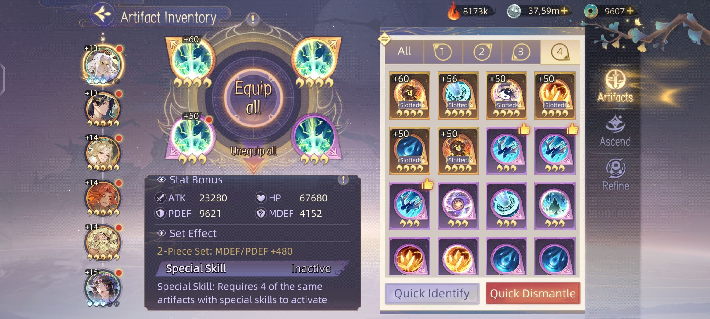
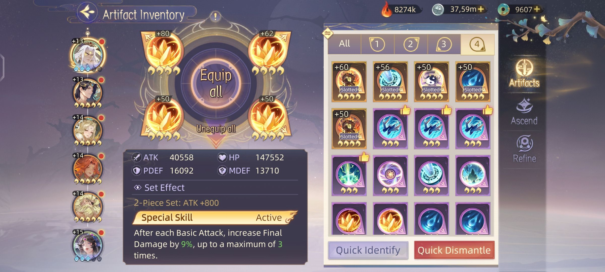

Ada 4 bagian artifact yaitu :
Artifact - 1
Memiliki Main Stat Attack. Sangat di wajibkan untuk di upgrade hinnga level tertinggi untuk semua DPS maupun SUB-DPS
Artifact - 2
Memiliki Main Stat Hp. Sangat di wajibkan untuk di upgrade hingga level tertinggi untuk semua hero di tim
Artifact - 3
Memiliki Main Stat Pysical Defense. Cukup di upgrade secukup nya
Artifact - 4
Memiliki Main Stat Magic Defense. Cukup di upgrade secukup nya
Grade Artifact
Grade Hijau (Membutuhkan lvl player 30) Jika meiliki 2 Artifact hijau untuk di upgrade maka memiliki kemungkinan 50% untuk menjadi grade biru.
Grade Biru (Membutuhkan lvl Player 45) Jika memiliki 2 Artifact biru untuk di upgrade maka mimiliki kemungkinan 30% untuk menjadi grade ungu
Grade Ungu (Membutuhkan lvl Player 60) Jika memiliki 2 Artifact unguu untuk di upgrade maka memiliki kemungkinan 10% untuk menjadi grade kuning
Grade Kuning (membutuhkan lvl player 75) Jika memiliki 2 Artifact kuning untuk di upgrade maka memiliki kemungkinan 5% untuk menjadi grade UR
 Special Skill
Saat melawan Fangchun Trial memiliki kesempatan untuk mendapatkan Special skill artifact. (memiliki efek kilauan) Special skill artifact memiliki beberapa keunggulan yaitu memiliki Active set saat meggunakan 4 Special artifact yang serupa.
Efek active skill pun beragam, berbeda di setiap artifact. Namun harus di ingat untuk mengaktifkan Active set harus memiliki 4 Special Artifact yang sejenis. Jika hanya memiliki 3 set efek nya tidak aktif